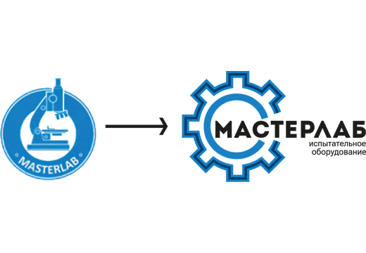

Редизайн логотипа для фирмы по созданию испытательного оборудования.
«МастерЛАБ» уже несколько лет создаёт специализированное оборудование для лабораторий, производящих испытания перед выпуском того или иного товара. Компания делает всё с 0 до готово оборудования. Основными требованиями были: упрощение логотипа (оставить только основной голубой цвет) ввиду того, что старый потерял свою актуальность, а также добавить больше приближенности к тематике, так как несмотря на узнаваемость компании в узких гругах, старый логотип не до конца ассоциируется с основной направленностью фирмы.
